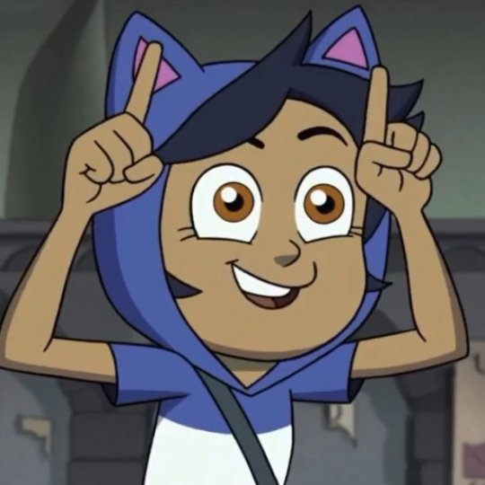
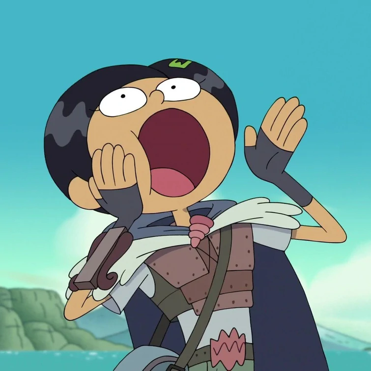
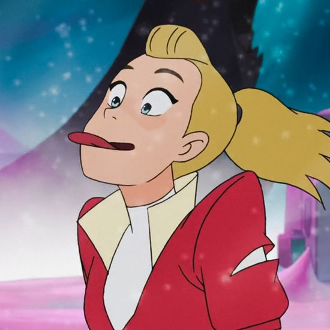

Cartoons
I've been watching cartoons since I was a kid. As a child my favorites were Invader Zim and Foster's Home for Imaginary Friends, both of which are considered classics. The characters were memorable and they still hold up today. As I grew older I watched shows like Adventure Time and Regular Show. I still love these ones too. Throughout the mid-2010s the cartoons airing throughout most of the day were high-energy, low-plot shows like Teen Titans Go which were targeted toward a much younger audience and didn't have the solid writing the others had. I stopped watching cartoons for a few years until my friends and I watched Adventure Time and Steven Universe together. It was good to watch these again, and while I have my criticisms of SU, I still enjoyed it and it was a good way to spend time with my friends. After these, we watched The Owl House together, which launched me from cartoon enjoyer to cartoon brainrot.
If you couldn't tell by the previous sentence or the pictures on the webpage, The Owl House is by far my favorite cartoon, and even my favorite show, of all time. The writing is superb. The character designs are memorable. The character development is incredible. The plot is captivating and intriguing for audiences of all ages. The LGBTQ+ representation is the best I've ever seen. Overall, I've grown attatched to this show, and I'm excited for the rest of season 3. The show is about a human girl, Luz Noceda, who is a bit quirky. After she brings live snakes and fireworks to school for her book report, the principal advises her mother Camila to send her to summer camp. Before Luz gets to leave though, a small owl steals her book, and she chases after it. She catches up with the owl not in the human realm, but in a magical world called the Boiling Isles. She meets Eda the Owl Lady, the most powerful witch on the boiling isles, alongside her roomate/pet/demon companion King. Luz stays with them, avoiding summer camp, and many adventures and antics insue. 11/10 show I love it. You can find my episode tier list for the show here.
We also watched Amphibia together. The first season seemed a bit silly and less plot-focused than The Owl House, but I was wrong. It actually provides a lot of character development and worldbuilding that's necesary before shit really kicks off with seasons 2 & 3. The show is another girl travels to another dimension with found family and adventures insue type show (it's even referenced in The Owl House and vice versa). Anne Boonchuy gets transported to Amphibia, a dimension of big frog people. Her two friends Sasha Waybright and Marcy Wu also get transported in, but not in the same place. The story follows Anne finding her friends and returning home, but oh boy is there a lot of shit that happens while doing that. I cried buckets at the end. Also Marcy Wu autism real my beloved (literally me).
The last show I'll talk about in depth is She-Ra and the Princesses of Power, the 2018 reboot of the 1985 He-Man spinoff. Don't let that fool you though, the show is really good. While I like TOH and Amphibia a little more, She-Ra is still amazing. I watched this on my own after hearing a friend talk about it, and it was a good watch. It follows Adora, a horde soldier who finds a magic sword that turns her into She-Ra, the 8-foot tall princess of power. She learns of the Horde's misdeeds and fights against them alongside the princess alliance. The story has complex character dynamics, such as the rivalry between once-close-friends Catra and Adora, and an intense plot. Teared up at the end of this one too. This one has its weaknesses with some fairly weak redemption arcs, and could've used another season to flesh out some characters and plot points, but I love it to death.